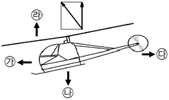
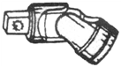
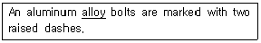
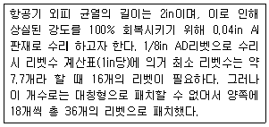
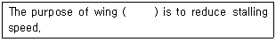

항공기관정비기능사 (2011-10-09 기출문제)
1과목: 비행원리
1. 국제민간항공기구(ICAO)에서 정하는 국제표준대기에 관한 설명으로 옳은 것은?
- 항공기의 설계, 운용에 기준이 되는 대기상태로서, 지역 및 고도에 관계없이 압력이 750mmHg, 온도가 15℃인 상태를 말한다.
- 항공기의 비행에 가장 이상적인 대기상태로서, 압력이 750mmHg, 온도가 15℃인 상태를 말한다.
- 항공기의 설계, 운용에 기준이 되는 대기상태로서, 같은 고도에 대한 표준압력, 밀도, 온도 등은 항상 같다.
- 해면상의 대기상태를 말하며, 항공기의 설계 및 운용의 기준이 된다.
(정답률: 59%)

2. 날개의 압력중심 (center of pressure)에 대한 설명으로 옳은 것은?
- 받음각의 변화에 따라 변화는 없다
- 받음각을 크게 하면 날개 앞전 쪽으로 이동한다.
- 받음각을 작게 하면 날개 앞전 쪽으로 이동한다.
- 날개의 캠버, 두께에 관계없이 항상 일정하다
(정답률: 76%)
3. 다음 중 유해항력(parasite drag)이 아닌 것은?
- 압력항력
- 마찰항력
- 유도항력
- 형상항력
(정답률: 86%)
4. 항공기가 자동회전과 수직강하가 조합된 상태로 운동하는 것은?
- 스핀
- 선회
- 스톨
- 키돌이
(정답률: 68%)
5. 다음중 양(＋)의 동적안정성(positive dynamic stability)을 옳게 설명한 것은?
- 수평비행 시 가속도를 일정하게 유지하려는 경향
- 선회비행 시 가속방향의 수직방향으로 미끄러지려 하는 경향
- 평형상태에서 벗어난 뒤에 다시 평형상태로 되돌아가려는 경향
- 비행기가 평형상태에서 이탈된 후 그 변화의 진폭이 시간의 경과에 따라 감소되는 경향
(정답률: 57%)
6. 날개의 양력계수 0.58, 날개면적(s) 10m2인 비행기가 밀도(ρ)0.1Kgㆍs/m인 공기 중을 50m/s로 비행하고 있다. 이때 날개에 발생하는 양력은 약 몇 Kgf인가?
- 425
- 527
- 625
- 725
(정답률: 45%)
7. 헬리콥터의 프로펠러와 같이 회전하는 물체의 각속도(Ω)와 회전반지름(R) 및 선속도(V)와의 관계로 옳은 것은?
- Ω=R/V
- Ω=V/R
- Ω=RV
- Ω=R2V
(정답률: 49%)
8. 헬리콥터 회전 날개에 발생하는 힘과 양력의 관계가 그림과 같다면 현재 이 헬리콥터의 진행방향은?

- ㉮
- ㉯
- ㉰
- ㉱
(정답률: 80%)
9. 양력이 20이고, 항력이 2일 때 이 항공기의 양항비는?
- 0.1
- 2
- 10
- 20
(정답률: 90%)
10. 층류 흐름이 난류흐름으로 변화되는 과정에서 천이현상이 존재하며, 이러한 천이현상이 발생되는 수를 무엇이라 하는가?
- 박리
- 점성계수
- 동점성계수
- 임계레이놀즈수
(정답률: 89%)
11. 정지된 무한 유체 속에 잠겨있는 어느 한 점에 작용하는 압력에 대한 설명으로 가장 옳은 것은?
- 위쪽에서 작용하는 압력이 가장 크다.
- 압력은 작용방향에 관계없이 일정하다
- 좌 우시에 작용하는 압력을 유체의 동압이라 한다.
- 아래쪽에서 작용하는 압력을 유체의 정압이라 한다.
(정답률: 69%)
12. 비행 중에는 도움날개를 도와주는 고항력장치로 쓰이며, 착륙 시에는 브레이크 효율을 높여주는 장치로 사용되는 것은?
- 플랩
- 스포일러
- 제동낙하산
- 역추력장치
(정답률: 78%)
13. NACA 2415 날개골에서 최대두께는 시위의 몇 %인가?
- 1
- 2
- 4
- 15
(정답률: 88%)
14. 다음 중 주 조종면에 해당하지 않는 것은?
- 태브
- 승강키
- 도움날개
- 방향키
(정답률: 93%)
15. 항공기의 착륙성능을 향상시키기 위한 가장 적절한 항공기의 무게중심의 위치는?
- 전방에 위치시킨다.
- 후방에 위치시킨다.
- 중앙에 위치시킨다.
- 무게중심의 위치와는 관계없다
(정답률: 59%)
16. 잭(JACK) 사용에 대한 점검사항과 거리가 먼 것은?
- 누설 점검
- SAFETY LOCK 점검
- 후크의 점검
- HYDRAULIC OIL 점검
(정답률: 57%)
17. 다음 중 용접수리를 해서는 안 되는 항공기 부분은?
- 기관 배기관
- 오일계통 튜브
- 균열이 발생한 연료탱크
- 랜딩기어 또는 엔진마운트
(정답률: 56%)
18. 여러 개의 얇은 금속편으로 이루어진 측정 기기로, 접점 또는 작은 홈의 간극 등을 측정하는데 사용되는 것은?
- 두께 게이지
- 센터게이지
- 피치 게이지
- 나사 게이지
(정답률: 86%)
19. 다음 중 정비관리에 대한 설명으로 틀린 것은?
- 신뢰성 관리 방식이 예방정비에 비하여 경제적이다.
- 오버홀의 정기적 실시 및 컨디션 모니터링은 예방정비에 해당한다.
- 신뢰성 관리는 항공기의 장비품이나 부품이 정상적으로 작동하지 못할 경우 즉시 원인을 파악하고 조치를 취하는 방식이다.
- 예방정비는 처음부터 고장 발생을 전제로 하여 고장을 예방한다는 개념이다.
(정답률: 51%)
20. 항공 조립부품을 연결한 후 가장자리나 패스너 머리(fastener head) 등과 같은 부분을 smooth하게 해주는 실링(sealing) 방법은?
- 필렛(fillet) 실링
- 인젝션(injection)실링
- 페잉(faying) 실링
- 프리코트(precoat)실링
(정답률: 55%)
2과목: 항공기정비
21. 금속 표면에 사용하는 솔벤트 세척제로서 주로 좁은 면적의 페인트를 벗기기 위해 극히 제한적으로 사용하는 항공기 세제는?
- 케로신
- 건식 솔벤트
- 지방족 나프타
- 메틸에틸케톤
(정답률: 59%)
22. 허니컴 구조에서 스킨분리(skin delamination)를 점검하는 가장 간단한 방법은?
- x-ray 검사
- 코인태핑 검사
- 와전류 검사
- 자분탐상 검사
(정답률: 73%)
23. 항공기 정비작업을 정비 사항에 따라 정비, 수리, 개조로 구분할 때 수리 작업에 해당되는 것은?
- 날개 형태의 변경에 해당되는 정비
- 항공기 조종능력 변경에 해당되는 정비
- 지상취급, 세척, 보급에 해당되는 정비
- 내부 부품의 복잡한 분해 및 예비품 검사대상 부품의 오버홀 정비
(정답률: 69%)
24. 다음 중 알루미늄 양극 산화 처리법이 아닌 것은?
- 질산법
- 황산법
- 크롬산법
- 수산법
(정답률: 50%)
25. 볼트의 부품기호가 AN3DD5A 로 표시되어 있다면 5가 의미하는 것은?
- 볼트 길이가 5/8in
- 볼트 직경이 5/8in
- 볼트 길이가 5/16in
- 볼트 직경이 5/16in
(정답률: 50%)
26. 항공기 급유 또는 배유 시 화재에 관련된 안전사항으로 틀린 것은?
- 지정된 위치에 일정 용량 이상의 소화기 또는 분말 소화기를 비치한다.
- 급유나 배유 시 일정거리 이내에서 담배를 피우거나 인화성 물질을 취급해서는 안 된다.
- 3점 접지에서 항공기와 연료차 사이는 안전조치 후 연결을 생략할 수 있지만 지면과는 각각 연결되어야만 한다.
- 항공기 무선설비가 작동 중일 때는 일정 거리 이내에서 급유 또는 배유를 해서는 안 된다.
(정답률: 88%)
27. 좁은 공간의 작업 시 굴곡이 필요한 경우에 스피드 핸들, 소켓 또는 익스텐션 바와 함께 사용하는 그림과 같은 공구는?

- 익스텐션 댐퍼
- 어댑터
- 유니버셜 조인트
- 크로풋
(정답률: 86%)
28. 6각 구멍을 가진 볼트를 풀거나 조일 때 사용하는 공구의 명칭은?
- 박스렌치
- 소켓렌치
- 알렌렌치
- 콤비네이션렌치
(정답률: 56%)
29. 다음 중 안전 고정 작업이 아닌 것은?
- 턴버클
- 고터핀 작업
- 안전결선 작업
- 자동고정너트 조임 작업
(정답률: 69%)
30. 보어 스코프(bore scope)의 주된 용도는?
- 내부의 측정
- 내부결함의 관찰
- 외부의 측정
- 외부 결함의 관찰
(정답률: 79%)
31. 밑줄 친 부분을 의미하는 올바른 용어는?

- 부식
- 강도
- 합금
- 응력
(정답률: 81%)
32. 항공기의 지상안전에서 안전색은 작업자에게 여러 종류의 주의나 경고를 의미하는데 청색(Blue)은 무엇을 의미할 때 표시하는가?
- 기계설비의 위험이 있는 곳이다
- 방사능 유출의 위험이 있는 곳이다
- 건물 내부의 관리를 위하여 표시한다.
- 장비 및 기기가 수리, 조절 및 검사 중이다
(정답률: 83%)
33. 다음은 어떤 수리방법에 대한 설명인가?

- 8각 패치 수리방법
- 스카프 수리방법
- 캡 스트립 수리방법
- 스트링거 수리방법
(정답률: 62%)
34. 항공법을 기준으로 하여 항공회사가 정비작업에 관하여 안전성 확보 및 효과적인 정비작업의 수행을 목적으로 설정된 기술적인 규칙과 기준을 무엇이라 하는가?
- 정비조직
- 정비규정
- 정비관리
- 정비지시
(정답률: 80%)
35. 다음 ( ) 안에 알맞은 것은?

- drag
- slats
- tails
- thrust
(정답률: 73%)
36. 왕복기관의 크랭크축에 달려 있는 평형추(counter weight) 의 주된 목적은?
- 크랭크축의 균열을 방지한다.
- 크랭크축의 비틀림을 방지한다.
- 크랭크축의 정적평형을 갖게 한다.
- 크랭크축의 질량변화를 감소시켜준다
(정답률: 80%)
37. 대형 항공기에서 압축기 부분에 물분사나 물-알콜 분사를 하는 주된 목적으로 옳은 것은?
- 추력 증가를 위하여
- 부식방지를 위하여
- 기관 청결을 위하여
- 기관 내구성 증가를 위하여
(정답률: 82%)
38. 밸브 개폐시기의 피스톤 위치에 대한 약어 중 “상사점전”을 뜻하는 것은?
- ABC
- BBC
- ATC
- BTC
(정답률: 68%)
39. 마그네토에서 브레이커 포인트 부분이 타거나 눌러 붙었을 때 교환해 주어야 할 부품은?
- 1차 코일
- 1차 콘덴서
- 2차 코일
- 점화스위치
(정답률: 50%)
40. 다음 중 기관의 출력 정격에 대한 설명으로 틀린 것은?
- 최대 연속 출력 시 출력은 이륙출력의 90% 정도이다
- 아이들 출력이란 기관이 자립회전 할 수 있는 최저 회전상태이다
- 이륙출력이란 이륙 시 발생할 수 있는 최대 추력이며 사용시간에 제한이 없다
- 최대 상승 출력이란 항공기를 상승시킬 때 사용되는 최대 출력이다
(정답률: 73%)
3과목: 항공기관
41. 기관이 최대출력 또는 그 근처에서 작동될 때 수동 혼합 조종장치의 위치는?
- 희박(lean) 위치
- 최대농후(full rich) 위치
- 외기 온도에 따라 위치 변화
- 외기습도에 따라 위치변화
(정답률: 82%)
42. 항공용 왕복기관의 공기 흡입 계통에 대한 설명으로 틀린 것은?
- 공기 덕트는 유입공기의 속도를 줄이기 위해 표면은 거칠고, 가능한 범위에서 곧게 제작되어야 한다.
- 공기 여과기는 도관으로 유입되는 이물질(먼지, 모래 등)을 걸러내는 역할을 한다.
- 알터네이터 공기밸브(Alternate air valve)는 조종석에 있는 기화기 공기히터 조종장치로 작동된다.
- 기화기(Carburettor)는 요구되는 연료량을 산정하고, 연료와 공기를 혼합하고, 기화(Vaporized)시키는 역할을 한다.
(정답률: 51%)
43. 계의 내부에너지 변화는 계가 흡수한 열과 계가 한 일의 차이를 말하며, 에너지 보존법칙의 한 종류라 볼 수 있는 열역학이론은?
- 열역학 제0법칙
- 열역학 제1법칙
- 열역학 제2법칙
- 열역학 제3법칙
(정답률: 73%)
44. 가스터빈기관의 애뉼러(Annular)형 연소실의 단점으로 옳은 것은?
- 정비성이 나쁘다
- FLAME OUT을 일으키기 쉽다
- 출구온도 분포가 균열하지 않다
- 연소가 불안정하며 검은 연기를 낸다.
(정답률: 72%)
45. 가스터빈기관 운전 시 추력조절에 대한 설명으로 옳은 것은?
- 시동 후 이이들 속도에서 일정시간 이상 작동해야 한다.
- 출력변경을 할 때는 최대한 신속하게 추력레버를 조작하여 가스패스의 소비를 원활히 해야 한다.
- 기관의 냉각을 위하여 최대 출력까지 급가속을 해야 한다.
- 가스패스의 손상을 방지하기 위해서 일정시간 급가속을 유지해야 한다.
(정답률: 73%)
46. 일반적인 아음속 항공기 제트기관의 배기노즐 형상으로 가장 많이 사용되는 것은?(오류 신고가 접수된 문제입니다. 반드시 정답과 해설을 확인하시기 바랍니다.)
- 확산형 배기노즐
- 가변면적형 배기노즐
- 수축형 배기노즐
- 수축-확산형 배기노즐
(정답률: 38%)
47. 축류식 압축기의 1단당 압축비가 1.5이고, 회전자 깃에 의한 압력 상승비가 1.25일 때 압출기 반동도는 얼마인가?
- 25%
- 50%
- 75%
- 100%
(정답률: 41%)
48. 항공용 왕복기관에서 윤활유를 채취하여 윤활유 분광시험을 한 결과 구리 입자가 검출되었다면 어느 부분에 이상이 있는 것인가?
- 마스터 로드실의 파손
- 피스톤 및 기관내부의 결함
- 밸스스프링 및 베어링의 파손
- 부싱 및 밸브가이드 부분의 마멸
(정답률: 54%)
49. 과급기(Super charger)에서 디퓨져(Diffuser)의 주된 목적은?
- 온도를 상승시킨다.
- 압출된 공기에 와류를 준다.
- 속도에너지를 열에너지로 바꾼다.
- 속도에너지의 일부를 압력에너지로 바꾼다.
(정답률: 60%)
50. 다음 중 가스터빈 기관에서 배기가스 소음을 줄이는 방법으로 옳은 것은?
- 고주파를 저주파로 변환시킨다.
- 배기흐름의 단면적을 좁게 한다.
- 배기가스의 유속을 증폭시켜준다
- 배기가스가 대기와 혼합되는 면적을 크게 한다
(정답률: 71%)
51. 항공기용 왕복기관에 대한 설명으로 틀린 것은?
- V형 기관의 실린더 수는 항상 홀수이다.
- 대향형기관의 실린더 수는 항상 짝수이다
- 1렬 성형 기관의 실린더 수는 항상 홀수이다
- 대향형 기관은 경비행기와 경헬리콥터에 주로 사용된다.
(정답률: 65%)
52. 연료 오일 냉각기(Fuel oil cooler)의 역할로 옳은 것은?
- 연료(Fuel)와 오일(Oil)을 냉각시킨다.
- 연료(Fuel)와 오일(Oil)을 가열시킨다.
- 연료를 냉각시키고 오일을 가연시킨다
- 연료를 가열시키고 오일을 냉각시킨다.
(정답률: 60%)
53. 공랭식기관에서 냉각핀의 재질과 같아야 하는 것은?
- 밸브
- 커넥팅 로드
- 실린더
- 크랭크 케이스
(정답률: 73%)
54. 제트기관(jet engine)의 연소실에서 가장 효율적인 공연비(air fuel mixing ratio)는 15 : 1인데 이것은 어떠한 단위의 비율인가?
- 압력의 단위
- 부피의 단위
- 무게의 단위
- 온도의 단위
(정답률: 44%)
55. 압축비가 7인 오토싸이클의 열효율은 약 얼마인가? (단, 작동유체의 비열비는 1.4로 한다. )
- 0.54
- 0.62
- 0.75
- 0.83
(정답률: 46%)
56. 다음 중 정속 프로펠러의 피치각을 조절해 주는 것은?
- 공기밀도
- 조속기
- 평형스프링
- 오일압력
(정답률: 65%)
57. 다음 중 터빈형식의 제트기관이 아닌 것은?
- 터보팬기관
- 터보제트기관
- 터보축기관
- 펄스제트기관
(정답률: 66%)
58. 항공용 가솔린이 갖추어야 할 조건으로 틀린 것은?
- 발열량이 커야한다
- 내한성이 작아야한다
- 기화성이 좋아야 한다.
- 부식성이 적어야 한다.
(정답률: 65%)
59. 가스터빈 기관의 직류 고전압 용량형 점화계통에서 필터의 역할은?
- 고전압 유지
- 직류에서 교류로 변환
- 통신잡음제거
- 교류에서 직류로 변환
(정답률: 48%)
60. 가스터빈 기관의 중요 3대 구성으로 옳은 것은?
- 압축기, 연소실, 터빈
- 압축기, 연소실, 기어박스
- 흡입부분, 확산부분, 배기부분
- 압축부분, 배기부분, 구동부분
(정답률: 86%)